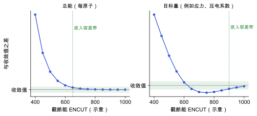

收敛测试
为什么要对目标量本身做收敛，而不只看总能；怎样设计测试并判断已经收敛。
直观阅读需要
- 预测的误差来自哪里 里“数值误差”这一类
完整推导还需要
- 平面波基组与截断能 的截断能与 倒空间、布里渊区与 k 点采样 的 k 点采样
- 自洽场循环与密度混合
只是提示，不需要先读完才能往下看。
直觉直观解释
DFT 计算的结果依赖一组数值参数：平面波截断能、k 点网格、自洽精度、结构优化的力阈值等。这些参数本身没有物理意义。理想情况下，把它们推到无穷精细，结果会趋于一个极限；“收敛”的意思是当前参数下的结果离这个极限足够近。
关键在于：收敛是针对某个量说的。总能在较低截断能下就稳定，并不代表应力、力常数、介电常数、压电系数也稳定了。导数类的量一般收敛得更慢，因为它们对基组变化和积分精度更敏感。所以要对你真正关心的量做收敛测试。

| 符号 | 是什么 | 图里对应 |
|---|---|---|
| ENCUT | 平面波截断能，这里作为被测试的参数 | 横轴 |
| 与收敛值之差 | 结果减去最精细参数下的结果 | 纵轴 |
| 容差带 | 你事先定下的可接受误差 | 绿色带 |
| 进入容差带 | 从这一点起所有更高参数都留在带内 | 绿色竖线 |
定义与公式数学与推导
这里有两点值得注意：
- 判据要求从 p^{*} 起一直留在容差内，而不是某一个点碰巧接近。振荡收敛（图右）时只看相邻两点的差会误判。
- 用 p_{\max} 代替极限，本身有误差。p_{\max} 应当明显高于你打算用的参数。
需要测试的参数
| 参数 | 作用 | 对哪些量特别敏感 |
|---|---|---|
截断能（VASP ENCUT） | 平面波基组大小 | 应力、弹性常数（Pulay 应力）[VASP Wiki: Pulay stress] |
| k 点网格 | 布里渊区积分 | 介电常数、Berry 相极化 |
自洽精度（EDIFF） | 电子自洽何时停止 | 有限差分得到的力常数 |
力阈值（EDIFFG） | 结构优化何时停止 | 内应变、声子频率 |
| 有限差分步长 | 数值导数 | 见 有限差分与微扰方法 |
参数之间有耦合，例如截断能会影响应力，进而影响优化后的晶胞。实际做法是先粗略确定每个参数，再在接近最终设置附近逐个测试。
在本研究线里的样子对应与边界
- β-甘氨酸的压电：目标量是 d_{16}（以及它依赖的 e 分量、弹性常数和介电量）。测试应对这些量做，而不只看总能或晶格参数。
- 分子晶体的 k 点：分子晶体晶胞较大、带隙较大，通常较稀的 k 点即可收敛总能；Berry 相极化在其计算方向上可能需要更密的 k 点串，需要单独测试。
- 记录：每次测试记录参数、目标量、所用结构和设置版本，测试结果才能复现，也方便写进论文的方法部分。
常见坑对应与边界
- 只测总能：总能已经收敛，不代表导数类的量收敛。
- 固定结构测截断能：如果目标量依赖优化后的结构，测试时要连同结构优化一起测，或者至少确认结构变化在容差内。
- 容差不先定：先看结果再决定“够了”，容易给出偏宽的判据。
- 测试范围太窄：只测到推荐值附近，可能看不出振荡或慢收敛。
检验自己对应与边界
参考资料
官方文档VASP Wiki: ENCUT
尚未实际查阅，目前只是拟查阅书目
官方文档VASP Wiki: Pulay stress
VASP Wiki, Pulay stress（基组不完备导致的应力误差）
尚未实际查阅，目前只是拟查阅书目
教材Martin 2020
尚未实际查阅，目前只是拟查阅书目
分类计算方法论 · 方法 · 研究线：压电与响应计算 · 状态：草稿